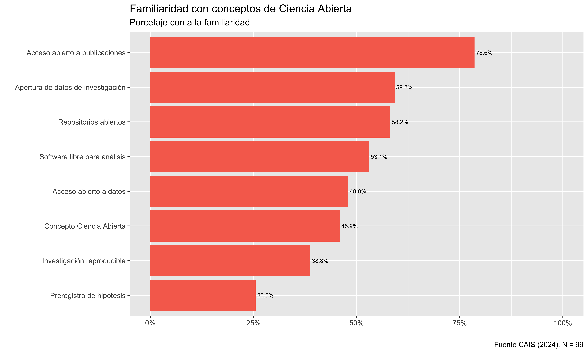
Ciencia social abierta en Chile: Apertura, transparencia y reproducibilidad
Juan Carlos Castillo ![]()
Kevin Carrasco
Resumen
Este documento contiene el paper cualitativo sobre prácticas, creencias y actitudes sobre Ciencia Abierta en académicos de las Ciencias Sociales en Chile. El trabajo de campo de esta fase cualitativa fue desarrollado entre julio y octubre del 2022. En total se entrevistaron a 14 académicos/as de Ciencias Sociales, con representación de distintas disciplinas (Psicología, Sociología, Antropología, Economía) y métodos (cuantitativos y cualitativos). Siempre resguardando representatividad por género y que realizaran investigación empírica. Agregar una abstract de hasta 250 palabras que se enviará con anterioridad
Introducción
Durante los últimos años, el mundo académico ha experimentado una serie de desafíos relacionados con el concepto de apertura, que pueden describirse en dos aspectos principales. El primero se refiere a la llamada crisis de replicación (Baker 2016; Nosek et al. 2015; Peng 2015), referida a las dificultades para replicar los resultados de la investigación debido a la falta de transparencia en el proceso de investigación, donde se ha sido posible evidenciar importantes variaciones en los resultados en equipos de investigación con datos idénticos (Breznau 2021). Esto ha tenido como consecuencia no sólo el fracaso en la replicación de muchos hallazgos publicados, sino también el descubrimiento y la denuncia de datos y resultados falsos (Chopik et al. 2020) con el fin de lograr publicar en revistas de alto impacto. El segundo desafío proviene de la apertura en términos de acceso, mediante el cual varias comunidades académicas han reaccionado contra las altas barreras de pago y el modelo de negocio impuesto por las compañías editoriales para acceder a los productos de la investigación científica: las universidades pagan una suscripción para acceder al trabajo incluso de sus propios investigadores, y a su vez el público fuera de la academia debe pagar nuevamente por obtener productos financiados por sus impuestos. Una de las reacciones más comentadas ha sido la cancelación de las suscripciones a revistas como Elsevier por parte de grandes universidades como UCLA, lo cual posteriormente se resolvió a través de un acuerdo basado en la adopción y promoción de prácticas en Open Access.
Las barreras en la transparencia y el acceso son síntomas de una cultura académica presionada por la publicación de indicadores que están sesgados hacia resultados “significativos” en términos estadísticos, lo que lleva a una tendencia a forzar los resultados (p-hacking), llegando incluso a manipular y falsear datos para confirmar las hipótesis propuestas (Head et al. 2015) o también el establecer hipótesis ad-hoc luego de conocer los resultados de un estudio (Hollenbeck y Wright 2017; Kerr 1998). Esto tiene como consecuencia que finalmente el principal público objetivo de la ciencia son los editores de revistas de alto rango, dejando de lado a otros públicos como la sociedad civil, el estado y la ciudadanía. Tal escenario es particularmente sensible para las ciencias sociales, que se supone basan sus estudios en problemas sociales relevantes para las personas, las comunidades y las sociedades en general.
Un número creciente de iniciativas en todo el mundo están abordando temas de replicabilidad, transparencia y acceso en la ciencia, como el Centro para la Ciencia Abierta (COS), la Iniciativa de Berkeley para la Transparencia en Ciencias Sociales (BITSS) y el proyecto Teaching Integrity in Empirical Research (TIER). Estas iniciativas fomentan la apertura en diferentes etapas del proceso de investigación, como la transparencia de los diseños de investigación a través de prerregistros de estudios, la reproducibilidad de los análisis y la manipulación de datos, así como en la publicación de preimpresiones libres de barreras de pago. Muchas de estas prácticas han sido adoptadas por revistas como recomendaciones o incluso requisitos para su publicación, así como promovidas por instituciones científicas gubernamentales. Todo esto implica un gran cambio en la forma de concebir, hacer y enseñar ciencia. Además, parece un paso necesario para hacer que la ciencia sea más relevante y cercana a quienes están fuera de la academia. En otras palabras, sería difícil mejorar la apertura y el intercambio con las comunidades locales si el trabajo dentro de la academia es mayormente cerrado y no colaborativo.
Como muchos otros desarrollos en la ciencia, el movimiento de la ciencia abierta ha llegado lentamente a América Latina, particularmente en las ciencias sociales. Aunque ha habido algunas iniciativas en los últimos años (como el Congreso de Ciencia Abierta y Ciudadanía en Argentina 2018, OpenCon LatAm Colombia 2019), la mayoría de ellas son promovidas desde las ciencias naturales. En esta línea, a partir del año 2021 la Agencia Nacional de Investigación y Desarrollo (ANID) realizará la implementación de una Política de acceso abierto de información científica y datos de investigación, la cual busca establecer un estándar de acceso público a los productos de investigación que hayan sido financiados por recursos de ANID, por lo tanto es de carácter estratégico desarrollar iniciativas que se propongan contribuir a la apertura de la ciencia.
A partir de este diagnóstico, el presente proyecto tiene por objetivo analizar el conocimiento, creencias y prácticas de ciencia abierta en académic_s de ciencias sociales en Chile, y desde este análisis generar recomendaciones y propuestas tanto para el quehacer académico como a las políticas científicas.
Antecedentes
Revisión ciencia abierta en general (Kevin, práctica)
Principales componentes de la ciencia abierta (JC - modelo LISA)
Antecedentes políticas de ciencia abierta Chile
Metodología
La investigación se basó en un diseño mixto secuencial-exploratorio. Este abordaje consiste en un método de dos etapas en que, usualmente, se inicia con un análisis cualitativo y es seguido por el desarrollo de un instrumento cuantitativo (Cresswell y Clark, 2017).
La integración de ambas técnicas se justifica en que, aunque existe experiencia internacional estudiando prácticas y valoraciones hacia la Ciencia Abierta, no se encontraron investigaciones previas que abordaran esta temática entre académicos chilenos. De tal modo, el diseño aquí propuesto supuso una primera fase de exploración cualitativa que permitió tener una primera impresión de las percepciones en torno al concepto de ciencia abierta en la comunidad académica chilena. Los resultados de esta primera indagación fueron integrados al diseño del instrumento cuantitativo, aplicado en segunda instancia.
Además de informar la construcción del instrumento, la integración entre la etapa cualitativa y cuantitativa se realizó mediante la síntesis de los hallazgos de ambas fases. De tal forma, se buscó extraer conclusiones coherentes, evaluando como los datos cuantitativos son capaces de ampliar o validar los hallazgos iniciales del estudio cualitativo, generando una comprensión integral del estado de la Ciencia Abierta en las ciencias sociales chilenas.
Estudio Cualitativo
Método
Se realizaron 13 entrevistas semiestructuradas a investigadores empíricos de ciencias sociales, seleccionados a partir de un muestreo aleatorio simple por criterios. El marco muestral consideró a todos los académicos que se hubiesen adjudicado un Proyecto Fondecyt Regular entre 2018 y 2019, en los grupos de estudio Antropología y Arqueología, Ciencias económicas y administrativas, Ciencias jurídicas y políticas, Psicología y Sociología. Considerando cuotas por sexo y grupo de estudio, se seleccionaron aleatoriamente uno o dos informantes por sexo para cada grupo de estudio. Se excluyeron los casos en que los investigadores seleccionados se abocaran estrictamente a la investigación teórica. Asimismo, se excluyeron casos como: a) investigadores del grupo de estudio Ciencias jurídicas y políticas dedicados a la investigación filosófica; b) investigadores del grupo de estudio Antropología y Arqueología no dedicados a la antropología social; c) investigadores del grupo de estudio Psicología abocados a la neurociencia. También, dado que el grupo de estudio de sociología está compuesto por investigadores de otras disciplinas, como la psicología social y el trabajo social, se aleatorizó hasta asegurar la selección de, al menos, un sociólogo. La siguiente tabla da cuenta de la composición final de la muestra:
| Grupo de estudio | Hombre | Mujer |
|---|---|---|
| Antropología y arqueología (Antropología) | 0 | 2 |
| Ciencias económicas y administrativas (Economía) | 1 | 1 |
| Ciencias jurídicas y políticas (Ciencia política) | 2 | 1 |
| Psicología | 1 | 2 |
| Sociología | 1 | 2 |
Aunque no se consideró como criterio de inclusión muestral, los participantes reflejan la diversidad metodológica observada en las ciencias sociales en Chile. De tal modo, 6 investigadores utilizan predominantemente métodos cualitativos; 5 trabajan mayormente con métodos cuantitativos; y 2 utilizan métodos mixtos.
Las entrevistas semiestructuradas se realizaron a través de videollamada, con una duración entre cuarenta minutos y una hora. Se abordaron tópicos relativos a la familiarización y conocimiento de los investigadores respecto a la ciencia abierta, su participación en prácticas de ciencia abierta, sus actitudes y valoraciones frente a prácticas de apertura y transparencia, así como frente a una futura posible obligatoriedad de tales, entre otros.
Se empleó análisis temático, en tanto es un método que permite identificar y describir patrones de significados (Braun & Clarke 2006), así como el conjunto de relaciones y jerarquías que entre estos se generan, organizados en torno al concepto de ciencia abierta y las ideas asociadas a este, a partir de códigos tanto semánticos como latentes (Boyatzis, 1998). En este sentido, este método es particularmente útil para comprender los puntos de vista, conocimientos, experiencias y valores de los participantes respecto a la ciencia abierta, a partir del conjunto de datos.
El análisis fue realizado principalmente por dos investigadores, apoyado por el software de análisis cualitativo ATLAS.ti en su versión 9.0.5. El proceso de codificación fue realizado simultáneamente por ambos investigadores y discutido en reuniones periódicas con el equipo de investigación, con fines de asegurar triangulación entre investigadores a lo largo del proceso de análisis (Nowell et al., 2017). Asimismo, se archivaron sistemáticamente versiones del proyecto y sus productos, a la vez que se llevó el registro de las reflexiones personales de los investigadores y las discusiones de equipo en torno al análisis en un diario reflexivo, para poder resguardar la auditabilidad del proceso de investigación (Silver y Lewins, 2007).
Resultados
Ciencia Abierta: Un concepto difuso
Inicialmente el concepto de ciencia abierta aparece como una idea difícil de definir, aparentemente lejana para los participantes. La mayoría de entrevistados señalan que están poco familiarizados con la idea de ciencia abierta, y no lo asocian a prácticas e iniciativas concretas. Sin embargo, esto coexiste con diferentes grados de conocimiento de los problemas que enfrenta, prácticas comunes de apertura y transparencia e, incluso, experiencias de investigadores que habían participado directamente en una serie de iniciativas institucionales o internacionales de ciencia abierta.
En lugar de mencionar prácticas concretas de ciencia abierta, el concepto es asociado principalmente a una variedad de iniciativas y orientaciones normativas de la investigación. Se asocia fuertemente con iniciativas de vinculación con el medio y divulgación científica, así como con el acceso de la población general o de “las comunidades” a los resultados de investigación.
También algunos entrevistados asocian el concepto a la producción de conocimiento, refiriendo al involucramiento de participantes, comunidades y grupos de interés en el proceso de investigación; el empleo de métodos mixtos (Sociología, cualitativos) o la interdisciplinariedad (Antropología, cualitativos; Sociología, cualitativos). Sólo unos pocos hacen referencia a prácticas como la apertura de datos o la publicación en revistas open-access.
Pese a la dificultades en su definición, se evidencia una valoración inicial positiva de la ciencia abierta. Estas van desde una relación directa con valores democráticos y la democratización del conocimiento, hasta evaluaciones más vagas y dubitativas. Con todo, igualmente se observaron algunas percepciones negativas desde algunos investigadores, refiriéndose a la ciencia abierta como una “fiebre” – esto es, como una tendencia pasajera – o como un “proyecto demasiado ambicioso”.
Actitudes, creencias y prácticas de Ciencia Abierta
- Apertura de resultados
En las entrevistas, la idea de apertura se encuentra asociada fundamentalmente a la apertura de resultados. Existe consenso en priorizar estar práctica, ya sea mediante revistas Open Access, políticas como la Ruta Dorada (Psicología, cuantitativo; Antropología, cualitativo) o compartiendo preprints y versiones finales en redes sociales académicas o personales.
En relación con la iniciativa de compartir y solicitar artículos o versiones previas en redes sociales académicas, destacan dos actitudes principales entre los investigadores. Por un lado, se percibe una actitud de sospecha hacia este tipo de prácticas, al considerarlas una mezcla de altruismo e interés personal (Psicología, cuantitativos). Aunque la colaboración científica se valora y es deseable, se reconoce que beneficia al investigador, al aumentar su número de citas. Esta sospecha de una motivación instrumental, vinculada a políticas de financiamiento, lleva a algunos investigadores a abstenerse de estas prácticas.
Por otro lado, se encontró que la existencia de cláusulas de no difusión en muchas revistas actúa como un desincentivo para compartir resultados, aunque ningún investigador reportó haber sido sancionado o fiscalizado por compartir sus publicaciones. Más allá de cualquier inquietud, la alta valoración de la apertura de resultados impulsa a los investigadores a compartir sus publicaciones en redes sociales académicas u otras instancias.
Para facilitar el acceso a los resultados de sus proyectos, algunos investigadores han recurrido a medios legales, como la Ruta Dorada. Esta alternativa permite el acceso libre a publicaciones mediante un pago del autor. Sin embargo, esta opción es vista negativamente por algunos entrevistados, quienes, debido al aumento de tarifas, han expresado su rechazo a pagar nuevamente por este servicio (Psicología, cuantitativos; Antropología, cualitativos).
Frente a esto, se cuestiona si realmente estas iniciativas reflejan los principios de la ciencia abierta, aputando de forma crítica al poder de mercado de las grandes editoriales. Se argumenta que estas prácticas se basan en trasladar los costos de accceso desde los usuarios a los investigadores (Psicología, cuantitativos). No obstante, estas visiones conviven con perspectivas más prágmaticas que reconocen que, dado el modelo basado en el referato gratuito y la venta de acceso, alguien debe asumir el costo de la apertura (Ciencia Política, métodos mixtos)
Por otro lado, es posible identificar actitudes generalmente negativas hacia la política de difusión de resultados de ANID, con base en las percepciones de deficiencia de esta a la hora de lograr volver público el conocimiento producido con fondos públicos. Los entrevistados dan cuenta de la rigidez de la política, en la medida que dificulta la realización de ciertas iniciativas de difusión dirigidas a público extra-académico, como la publicación de Podcasts.
Además, se pone en relieve que la estructura de financiamiento de la ANID pone mayor énfasis en las publicaciones en revistas indexadas en WoS y Scopus, en desmedro de revistas de libre acceso en español. Aunque éstas últimas tienen menor impacto académico, se reconoce que son más accesibles tanto para el público general como para los tomadores de decisiones. A su vez, se percibe que estas prácticas conllevan una “transferencia de capital del sur al norte global” (Antropología, cualitativos). Esto pues, investigaciones financiadas con recursos estatales son publicadas en revistas con barreras de pago, a las cuales los investigadores nacionales o sus universidades deberán pagar - en general, con fondos públicos - para poder acceder a ellos.
Los entrevistados identifican tensiones entre la necesidad de abrir y difundir los resultados de investigaciones financiadas con recursos públicos, la rigidez de la política de difusión de la ANID y su esquema de financiamiento e incentivos. Para equilibrar la presión de publicar en revistas de alto impacto a la vez que se cumplen los principios de apertura, los investigadores han adoptado estrategias como diversificar los productos de su investigación. Una de ellas es el “sacrificio de publicaciones”; lo que implica diferir resultados: algunos se envían a revistas de alto impacto para maximizar puntajes en postulaciones; otros, a revistas locales, abiertas y en español, con mayor facilidad de acceso al público general.
En línea con la cita anterior, se observa que la idea de apertura no se limita al acceso a publicaciones académicas, sino a que los resultados tengan “impacto social”. Frente a esto, se adoptan prácticas tales como la publicación de columnas y editoriales en medios de prensa escrita (Psicología, cuantitativo), creación de documentales (Sociología, cualitativo), e instancias de devolución con comunidades investigadas u otras similares (Antropología, cualitativo; Psicología, cuantitativo).
En lo que respecta al acceso a publicaciones científicas, los entrevistados han destacado el papel que desempeñan poseen las universidades en que se desempeñan a través de sus bibliotecas. Por ello, y como se señaló en apartados anteriores, los entrevistados tienden a plantear que no han tenido dificultades para acceder a publicaciones.
Por otro lado, otros señalan que en América Latina las prácticas de acceder a productos científicos como pre-prints o working papers, a través de mecanismos informales o mediante piratería, son extendidas entre los investigadores y otorgan otro medio para hacer frente a los problemas de acceso sin mayores consecuencias.
- Transparencia del diseño
Sólo algunos entrevistados declararon haber publicado un pre-registro de sus investigaciones en la web Open Science Framework (Psicología, cuantitativos; Ciencia política, métodos mixtos), o bien, a partir de iniciativas levantadas por revistas (Ciencia política, métodos mixtos; Economía, cuantitativos).
En el caso de economía se declara que el pre-registro es una práctica extendida y dado los protocolos de la American Economic Association, lo cual ha sido evaluado de forma positiva pero, en algunos casos, como un estándar excesivo debido a su obligatoriedad en muchas revistas.
Asimismo, destaca el que un entrevistado haya enviado a revisión editorial un pre-registro en un número especial para este tipo de productos. Ambas experiencias parecen apuntar a la importancia de las iniciativas editoriales a la hora de incentivar prácticas de transparencia en el proceso de investigación.
Pese a estas experiencia, la gran mayoría de los entrevistados no estaban realmente familiarizados con el concepto de pre-registro. Otro grupo de entrevistados sí conocía la idea, pero sin practicarlo, esbozando distintas argumentaciones tales como:
La idea de que el pre-registro solo es posible en cierto tipo de investigaciones – las cuantitativas con hipótesis – por lo que su práctica no tiene sentido en otros diseños (Psicología, cualitativos; Economía, cuantitativos)
Se argumenta que el pre-registro puede constituir una “camisa de fuerza” (Ciencia política, cualitativos), sobre todo en caso de seguir una lógica inductiva. Para algunos investigadores, el diseño sólo existe en su ejecución (Sociología, cualitativos), por lo que no se puede asegurar la equivalencia entre un diseño previo y el producto final.
-Preocupaciones asociadas a los derechos de propiedad intelectual al publicar diseños de investigaciones que aún no son llevadas a cabo (Psicología, cuantitativos).
En suma, pese a destacar el hecho de que el pre-registro de hipótesis permite asegurar que una investigación no incluye prácticas como el HARKing (Economía, cuantitativos), el bajo conocimiento y formación en esta práctica; su asociación a ciertos tipos de investigación; las limitaciones metodológicas planteadas; y las preocupaciones asociadas a las presión por publicar que señalan los entrevistados están a la base de las sospechas y consiguiente generalización de no practicar el pre-registro.
- Apertura de datos
Las actitudes positivas frente a la apertura de datos se fundamentan principalmente en la creencia de que esta es útil para el desarrollo de la ciencia. Esto, pues, se entiende que favorece el impacto científico de las publicaciones asociadas a los datos; permite ahorrar recursos humanos y monetarios destinado a la producción de datos; y reduce el impacto en comunidades marginadas o grupos sociales estudiados con mayor frecuencia.
Especialmente en el caso de las investigaciones financiadas con fondos públicos, la mayoría de los investigadores mostraron una actitud altamente favorable a la apertura de datos, y varios señalaron que debería ser un requisito más enfático u obligatorio. Algunos investigadores incluso sostuvieron la idea de que los datos en este tipo de investigaciones son bienes públicos, y la no disponibilización de los datos se percibía como un acaparamiento ilegítimo.
Por otro lado, algunos investigadores cuestionan la obligatoriedad de la apertura de datos, destacando la inversión personal y los costos adicionales que implica. Argumentan que los datos son propiedad del investigador, al menos temporalmente, ya que su producción requiere innovación, creatividad y la construcción de relaciones con sujetos o instituciones. Para estos investigadores, del tal modo, la producción de datos es una producción intelectual, no una simple inversión de recursos ejecutada por el investigador.
Además, se constata una tensión entre la apertura de datos y la presión por publicar, no sólo por el tiempo que el investigador deba dedicar a la apertura, sino también por la presión por productos científicos con preguntas o diseños originales y novedosos. Varios investigadores asocian la apertura de los datos a la pérdida de control sobre su uso, y la posible dificultad de publicar utilizando datos abiertos.
Asimismo, algunos investigadores cuestionan el sentido de abrir los datos, pues sostienen que es difícil utilizar datos públicos de forma novedosa porque ya han sido utilizados, y que no necesariamente se adecuan a la especificidad de la investigación en ciencias sociales.
Acompañando esta actitud suspicaz respecto a la utilidad de la apertura de datos, los entrevistados señalan los costos metodológicos y riesgos éticos que perciben los investigadores en la práctica. Por un lado, la totalidad de los investigadores consideran que la mayor parte de los datos cuantitativos no debieran requerir protocolos especiales de ética ni condiciones de uso, exceptuando por datos producidos en poblaciones específicas o en los estudios de economía en que los datos pertenecen a empresas privadas.
Por otro lado, la apertura de datos cualitativos enfrenta retos significativos desde el punto de vista de los entrevistados, como el resguardo de la identidad de los participantes. Se menciona que, incluso si fuera posible movilizar los recursos humanos para la anonimización de datos, el riesgo de afectación para muchas comunidades excede su anonimato. Además, la descontextualización de los datos, debido a la pérdida de rapport entre investigador y comunidades, limita el análisis y desincentiva su uso.
Cabe destacar que a pesar de la percepción de diferencias en facilidad y pertinencia de apertura entre datos cualitativos y cuantitativos, sólo dos de los investigadores entrevistados, uno cualitativo y uno cuantitativo, habían practicado alguna vez la publicación abierta de datos más allá de los requisitos editoriales y de compartir datos directamente con otros investigadores.
- Transparencia del análisis:
La transparencia del análisis es valorada por su contribución al avance científico y al aprendizaje metodológico de nuevos investigadores. Además, se percibe y se valora una creciente exigencia de las revistas de alto impacto por apartados metodológicos más detallados en investigaciones cualitativas, y por la apertura de los códigos de análisis en los estudios cuantitativa. De tal modo, esta mayor transparencia se asocia con una mayor rigurosidad analítica y a la validez de los resultados.
Las prácticas y expectativas sobre la transparencia en investigaciones cualitativas y cuantitativas difieren. En las primera, la transparencia se asocia principalmente con la claridad metodológica en las publicaciones, complementado ocasionalmente con anexos que detallan algunos procedimientos. Sin embargo, no se da prioridad a la publicación de insumos como libros de códigos u outputs de softwares, ni se mencionan expectativas de reproducibilidad y replicabilidad.
Por su parte, la transparencia de análisis cuantitativos tiende a asociarse a la disponibilización, pública o privada, de los códigos de análisis elaborados. Destaca el hecho de que, muchas veces, esta disponibilización tiende a solicitarse desde las revistas académicas. Si bien no se tematiza del todo, es posible inferir que la mayor extensión de la utilización de software para estos procedimientos, en comparación con lo que sucede en investigación cualitativa, tienda a facilitar la consolidación de un conjunto de prácticas y actitudes más favorables hacia la transparencia de los análisis.
No obstante, ningún investigador declaró haber publicado abiertamente su código de análisis, ya que estos suelen compartirse de forma privada, a través de redes académicas o contactos personales. Se menciona que los códigos son como “cepillos de dientes” (Economía, cuantitativos), por ser altamente personales y no estar diseñados para el intercambio público. Además, complicaciones éticas y metodológicas, junto con la necesidad de claridad y orden de los códigos para que estos sean útiles, resaltan la carencia de un estándar para su publicación. Por último, se menciona que en algunas disciplinas, como la Economía, los investigadores no han migrado a softwares de código abierto, debido a la persistencia en el uso extendido de programas con barreras de pago.
Estudio Cuantitativo
Método
Se diseñó un cuestionario a partir de la revisión de literatura (Baker, 2016; Chin et al., 2021; Delikoura & Kouis, 2021; Enke et al., 2012; Gross & Ryan, 2015; Hail et al., 2020; Hodenu-wusu et al., 2020; Lacey et al., 2020; Ljubenkovic et al., 2021; López-Cardenas & Cubero-Castillo; 2021; Knudtson et al., 2019; Pardo Martínez & Poveda, 2018; Rodríguez, 2014; Rowley et al., 2017; Sturmer et al., 2017; Zhu, 2020 ), así como de los hallazgos de la etapa cualitativa.
El cuestionario consistió en 91 preguntas divididas en los siguientes módulos:
Ciencia Abierta: 18 ítems relativos al conocimiento y la valoración general de los investigadores hacia la Ciencia Abierta
Diseño Transparente: 20 ítems que abordan prácticas propias y percibidas en la comunidad sobre la transparencia en los diseños de investigación. Esto incluye tanto prácticas positivas (por ejemplo, compartir códigos u otros materiales de investigación en un repositorio en línea de acceso público) como negativas (por ejemplo, creación post-hoc de hipótesis y explicaciones de datos).
Datos abiertos: 19 ítems relativos a prácticas, conocimiento y valoración del acceso abierto a los datos de investigación.
Investigación reproducible: 15 ítems que indagan sobre conocimiento y valoración de la reproducibildiad de la investigación en Ciencias Sociales y la “crisis de reproducibilidad”.
Acceso abierto a publicaciones: 14 ítems que tratan sobre conocimiento, prácticas y valoración de la publicación de artículos en revistas Open Access.
Política de Acceso Abierto de la ANID
El cuestionario fue aplicado mediante la plataforma FormR (Arslan et al., 2020; Arslan, 2025). FormR es un software de código abierto que permite diseñar cuestionarios complejos con un gran nivel de personalización. Al estar integrado con RStudio (R+ RMarkdown), facilita el trabajo colaborativo, independiente de la extensión del cuestionario. La plataforma permite la autoaplicación del cuestionario, ya se mediante una computadora o mediante teléfono celular.
Preguntar por muestreo
Se lograron 98 respuestas completas. La descripción de la muestra obtenida se describe a continuación
Agregar tabla
Se realizó un análisis descriptivo uni y bivariado de los indicadores claves del cuestionario. El análisis se abocó a describir conocimientos, prácticas y valoraciones de los encuestados en torno a la ciencia abierta y los constructos descritos anteriormente. Estas variables fueron cruzadas por grupo etario, enfoque de investigación, etapa en la carrera académica, grado académico y género, con el fin de detectar posibles diferencias entre grupos.
Resultados
Conocimientos
Los niveles de familiaridad con conceptos relacionados a la ciencia abierta refrendan lo observado en las entrevistas cualitativas. Así, el concepto más reconocido por los encuestados es el de acceso abierto a publicaciones, en línea con lo descrito en la etapa anterior, donde la idea de apertura se encontraba relacionada predominantemente a los resultados y publicaciones de la investigación. En el otro extremo, sólo un 25% de los encuestados mencionan estar familiarizados con el pre-registro de hipótesis. En general, los niveles de conocimiento parecen ser mayores entre investigadores jóvenes y con enfoque predominantemente cuantitativo.

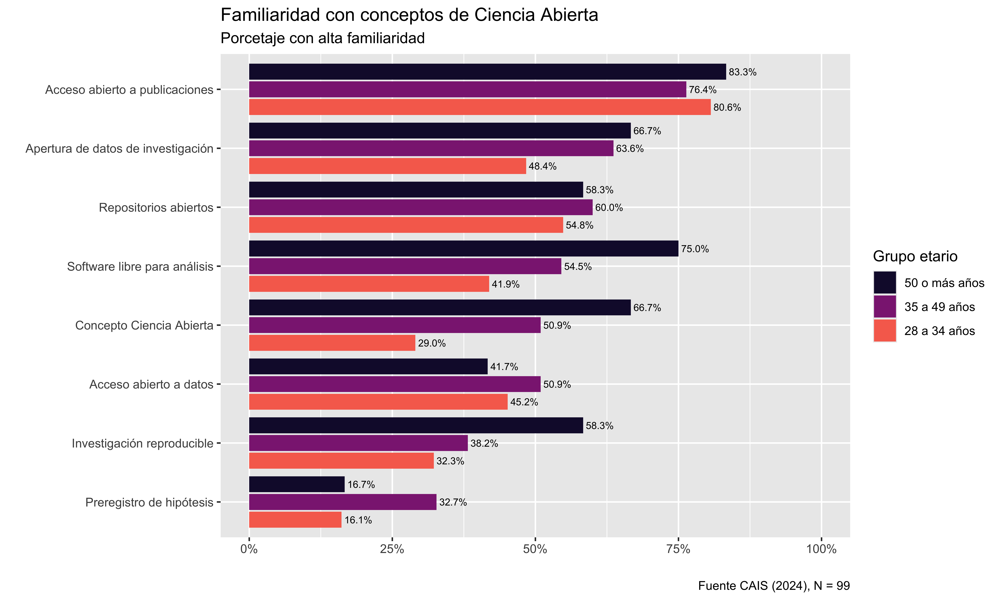
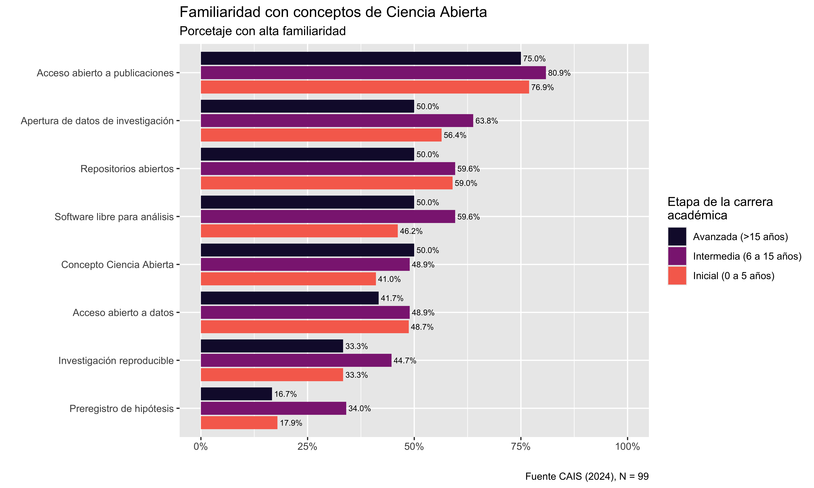
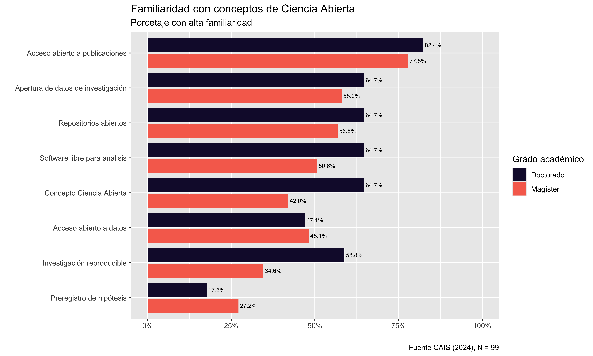

Prácticas
En general, se observa una baja frecuencia de prácticas relacionadas con la ciencia abierta. Un 32% de los encuestados siempre o casi siempre utiliza repositorios en línea para subir información relacionada a sus investigaciones, y un 16% declara compartir códigos entre investigadores. Este tipo de prácticas son más comunes entre investigadores hombres, aquellos cuyo enfoque predominante es cuantitativo, y quienes están en una etapa inicial o intermedia de su carrera académica.
Es interesante que, en general, los investigadores declaran mejores prácticas propias que las percibidas en la comunidad. De tal modo, sólo un 14% cree que siempre o casi siempre la comunidad utiliza repositorios en línea para subir información relacionada a sus investigaciones, y un 5% cree que los investigadores comparten códigos con esa frecuencia.
Esta brecha es cierta también en lo relativo a las malas prácticas. Un 9% de los encuestados declara que casi siempre o siempre no informa estudios o variables que no alcanzaron significación estadística, mientras que un 45% percibe esta práctica como frecuente en la comunidad. Por otro lado, mientras un 7% declara reportar selectivamente resultados, el 40% cree que esto ocurre siempre o casi siempre entre la comunidad. Finalmente, mientras nadie reconoce manipular datos para validar una hipótesis, el 4% afirma que esto ocurre siempre o casi siempre en la comunidad.
En general, la percepción de prácticas negativas en la comunidad es superior entre hombres que entre mujeres. Un 56% de los investigadores hombres cree que en la comunidad casi siempre o siempre no se informan resultados que no alcanzaron la significación estadística y un 49% cree que el reporte selectivo de resultado es una práctica frecuente en la comunidad. Esto puede estar relacionado a que los investigadores hombres, además, reconocen llevar a cabo estas prácticas con mayor frecuencia.
Por otro lado, se observa una alta percepción de barreras para el desarrollo de la ciencia abierta en todas sus dimensiones. La falta de políticas y la falta de incentivos son reconocidos como los principales factores que limitan a la ciencia abierta. En menor medida, pero también relevante, se reconoce la falta de conocimiento como una dificultad para el diseño transparente. La reticencia ante el plagio, además, es una de las principales razones que restringen la apertura de datos.
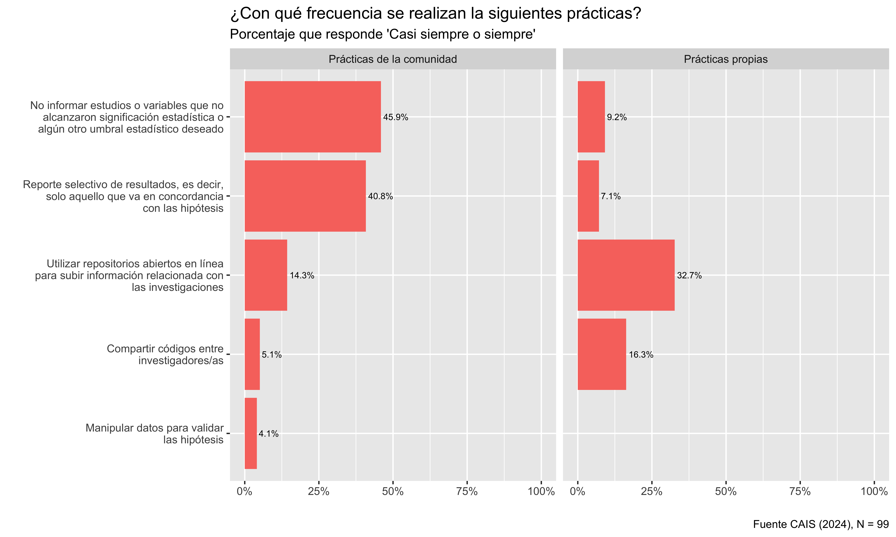
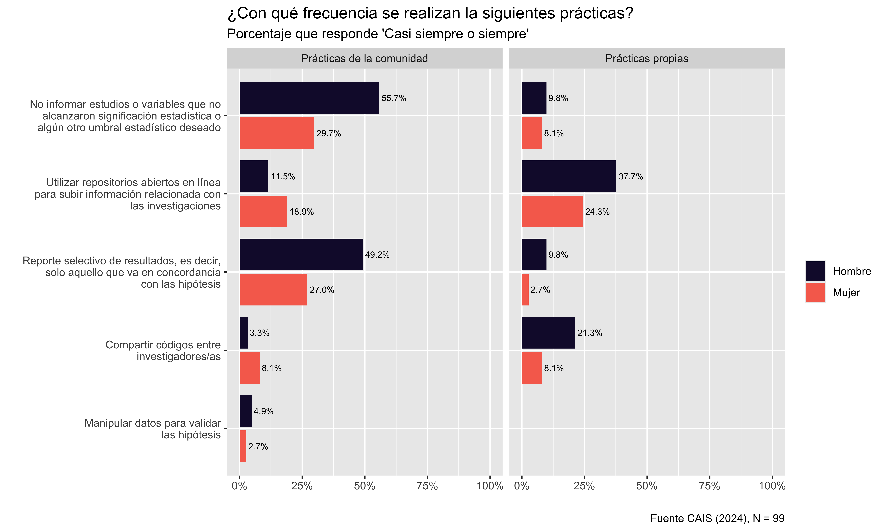
Barreras en Ciencia Abierta:
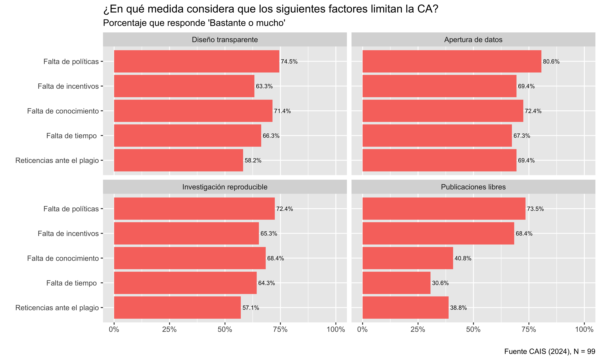
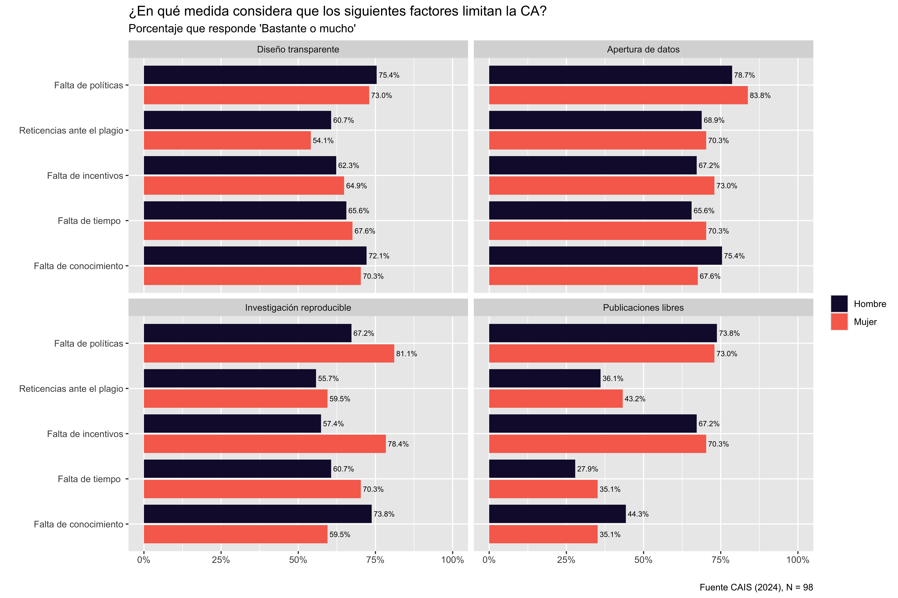
Valoraciones
En general, se valora positivamente la posibilidad de adoptar medidas de Ciencia Abierta en las Ciencias Sociales. El acceso abierto (92%), la replicación de hallazgos (67%), el reporte de resultados no estadísticamente significativos (76%), y la disponibilización en línea de datos y materiales de análisis (72%), todas muestran un alto nivel de aceptación entre los encuestados.
La única excepción es el pre-registro de hipótesis, que solo tiene un 42% de evaluación positiva. Esto se explica por un mayor nivel de desconocimiento (17??% dice no conocer la medida), además de las reticencias observadas tanto en las entrevistas como en el apartado anterior.
Salvo por el acceso abierto a publicaciones, la valoración positiva de estas medidas es mayor entre investigadores con enfoque cuantitativo (menor entre investigadores cualitativos e intermedio entre quienes practican enfoques mixtos), en la etapa inicial (hasta 5 años) o intermedia (de 6 a 15 años) de su carrera académica, y entre mujeres.
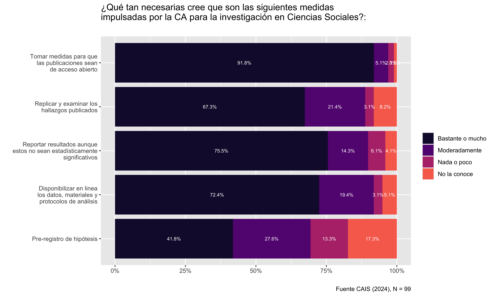

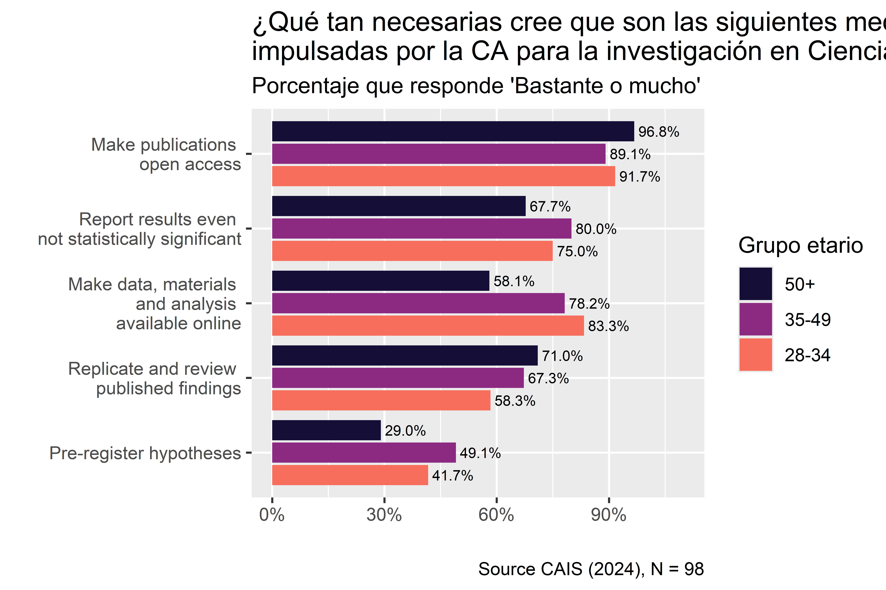
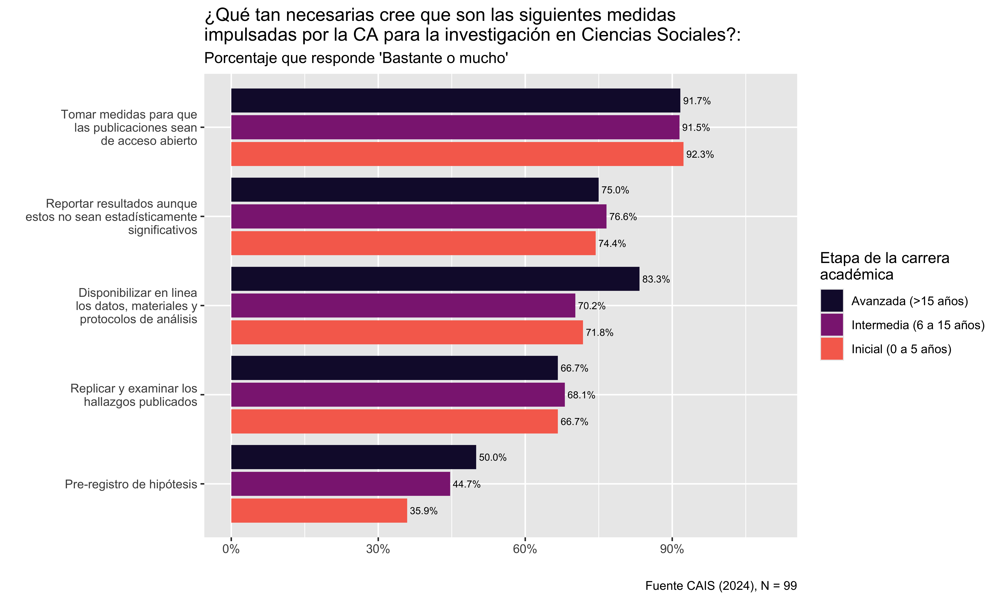
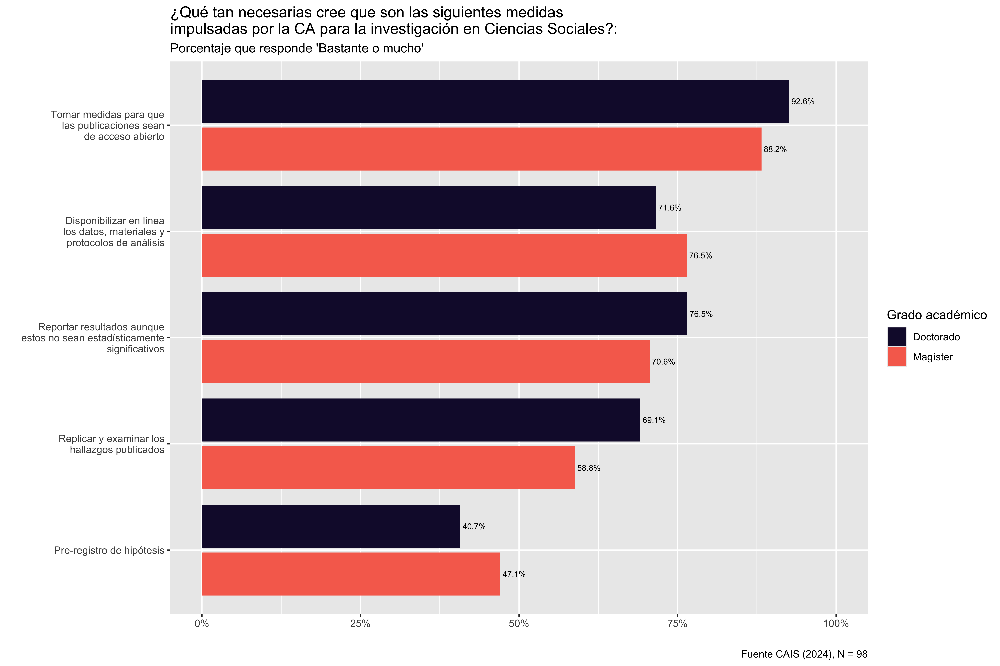

Otros indicadores que se pueden agregar
Razones para abrir datos: Generar redes (84%) Mayor entre mujeres (95%) y entre investigadores cuantitativos (90%) Difundir a la comunidad científica (81%) Aumentar visibilidad (75%) Mayor entre mujeres (81%) e investigadores cuantitativos (87%) Crisis de reproducibilidad 39% cree que hay una crisis importante de reproducibilidad, pero 40% no sabe si la hay. Entre los investigadores cuantitativos, el 70% cree que la crisis es importante. Entre los investigadores cualitativos el 60% no sabe si hay una crisis de reproducibilidad.
El 59% cree que el 30% o menos de las investigaciones en ciencias sociales son reproducibles; El 83% cree que menos de la mitad de las investigaciones en ciencias sociales son reproducibles.
El 56% ha intentado reproducir sus propios resultados y el 40% los resultados de otros investigadores. Esta práctica es mayor entre investigadores cuantitativos y de carrera avanzada El 49% de los intentos de reproducir resultados propios se han logrado reproducir completamente. Solo el 20% de los intentos de reproducir resultados de otros investigadores han logrado una reproducción completa. Un 69% ha logrado reproducciones parciales.
Módulo Anid
- Estos casos suelen tener una alta cantidad de casos perdidos.
- 49% ha escuchado de la política de ciencia abierta de la ANID
- 84% considera bastante o muy necesario la implementación de acceso abierto
- Solo 6 académicos (12% válidos) han publicado algún trabajo en el repositorio de la ANID
- Solo 13 (26% casos válidos) conoce el plan de gestión de datos de la política de acceso abierto de la ANID
- 90% está de acuerdo o muy de acuerdo con ANID continue desarrollando políticas de ciencia abierta
- 50% considera bastante o muy necesario que la ANID exiga prerregistro
- 50% considera bastante o muy necesario que la ANID incorpore la reproducibilidad en su política de acceso abierto
- 24% considera que las políticas de difusión de la ANID son buenos o muy buenas.
Discusión
Conclusión
Referencias
Baker, Monya. 2016. «1,500 Scientists Lift the Lid on Reproducibility». Nature 533 (7604): 452-54. https://doi.org/10.1038/533452a.
Breznau, Nate. 2021. «Does Sociology Need Open Science?» Societies 11 (1): 9. https://doi.org/10.3390/soc11010009.
Chopik, William J., Christopher R. Chartier, Lorne Campbell, y M. Brent Donnellan. 2020. «Relationship Science and the Credibility Revolution: An Introduction to the First Part of the Special Issue». Personal Relationships 27 (1): 132-37. https://doi.org/10.1111/pere.12312.
Head, Megan L., Luke Holman, Rob Lanfear, Andrew T. Kahn, y Michael D. Jennions. 2015. «The Extent and Consequences of P-Hacking in Science». Plos Biology 13 (3): e1002106. https://doi.org/10.1371/journal.pbio.1002106.
Hollenbeck, John R., y Patrick M. Wright. 2017. «Harking, Sharking, and Tharking: Making the Case for Post Hoc Analysis of Scientific Data». Journal of Management 43 (1): 5-18. https://doi.org/10.1177/0149206316679487.
Kerr, Norbert L. 1998. «HARKing: Hypothesizing After the Results Are Known». Personality and Social Psychology Review 2 (3): 196-217. https://doi.org/10.1207/s15327957pspr0203_4.
Nosek, B. A., G. Alter, G. C. Banks, D. Borsboom, S. D. Bowman, S. J. Breckler, S. Buck, et al. 2015. «Promoting an Open Research Culture». Science 348 (6242): 1422-25. https://doi.org/10.1126/science.aab2374.
Peng, Roger. 2015. «The Reproducibility Crisis in Science: A Statistical Counterattack». Significance 12 (3): 30-32. https://doi.org/10.1111/j.1740-9713.2015.00827.x.